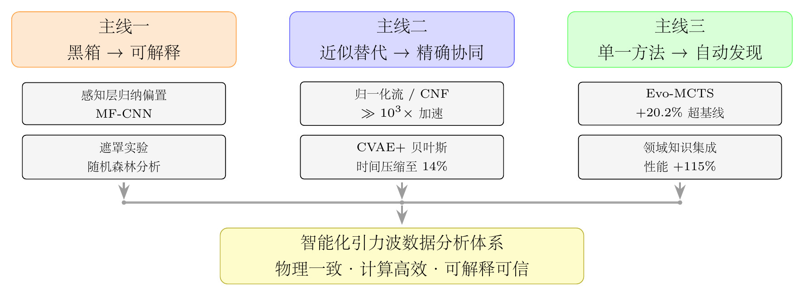

Chapter 12
结语：面向可信智能引力波天文学
12.1 本书主要贡献总结
本书以“人工智能与统计推断的交叉融合”为主线，系统梳理了引力波天文学数据分析方法论的前沿进展。从第一部的理论基础出发，经由第二部对经典方法局限性的深入分析，到第三、四部对 AI 新方法及其与物理融合的系统介绍，最终以第五部对未来挑战与发展趋势的展望收尾——全书构成一个逻辑完整、层次递进的方法论体系。
本书写作的学术背景，是引力波天文学从发现阶段走向大样本和空间探测阶段的关键时期：从2015年GW150914的首次直接探测，到即将到来的太极/LISA空间引力波探测器时代，数据分析面临的计算挑战从“困难但可解决”演变为“直接传统流程难以承担”。正是这种现实需求，驱动了本书所介绍的每一个方法论创新——每一项创新都不是为了创新而创新，而是为了解决引力波天文学前进道路上的具体障碍。这种“问题驱动的方法论创新”精神，贯穿了本书的始终，也是评价这些方法论价值的正确标准。
引力波天文学的成功，既是探测器技术的胜利（将应变灵敏度提升至\(10^{-23}\)量级），也是数据分析方法的胜利（从海量噪声数据中提取微弱的时空信号）。本书所记录的人工智能方法论创新，是这一数据分析方法演进中的重要组成部分。它们的价值不在于制造技术噱头，而在于把新的计算工具放回引力波天文学的严格物理和统计约束之中，检验其是否真正能够服务于可靠的科学发现。
在方法论层面，本书的核心贡献可以归纳为三条主线。
第一条主线：从黑箱到可解释。早期深度学习方法在引力波数据分析中以高效见长，但决策逻辑对物理学家不透明。本书系统介绍了可解释性的多种实现路径：感知层设计将物理先验以归纳偏置的形式嵌入网络结构 [20]（第5章）；随机森林特征分析揭示了 CNN 关注的物理特征 [85]（第5、9章）；Evo-MCTS 框架通过树结构进化搜索，直接发现由可检视模块组成的算法 [30]（第8章）。这一从“黑箱”到“可解释”的演进，是引力波 AI 方法走向实际科学应用的必经之路。
第二条主线：从近似替代到精确协同。SBI 方法（第6章）和混合推断策略（第6、9章）展示了 AI 与经典贝叶斯方法的一种有代表性的合作模式：神经网络不是替代贝叶斯推断，而是作为快速先验约束工具，在特定实验设置中将精确贝叶斯采样的计算代价压缩至 14% [25]。这一“精确协同”范式，相比单纯的“近似替代”更容易满足科学可信度和可校准性的要求。
第三条主线：从单一方法到自动发现。Evo-MCTS（第8章）代表了一种新的方法搜索范式：在由人类专家定义的搜索空间、评估指标和物理约束下，由 LLM 引导的进化搜索提出候选算法 [30]。在 MLGWSC-1 基准 [18]上 20.2% 的性能提升，说明“AI 辅助算法发现”可以在受控基准中形成可检验的研究路径。
本书系统介绍的方法论体系在科学可信度方面也进行了建设，这是AI方法在严肃科学中应用的重要前提，却往往在方法论论述中被忽视。可信度建设体现在三个层面：统计验证层面，PP图、覆盖率检验、Gelman-Rubin统计量等工具被用于检验AI方法的统计一致性；物理验证层面，遮罩实验、随机森林特征分析、beyond-GR泛化测试等工具被用于考察AI方法的物理一致性；工程验证层面，MLGWSC-1等标准化挑战赛提供了与独立基线的客观比较，增强了性能声明的可重复性。这三个层面的系统验证，构成了引力波AI方法科学可信度的闭环，也是本书对引力波AI方法论的重要贡献之一。科学可信度的建设不应被视为方法开发完成后的附加环节，而应贯穿整个方法论体系的设计之中：从最初的网络架构选择（物理先验的嵌入方式决定了可解释性的深度），到训练策略的制定（训练集的代表性决定了统计一致性的范围），到验证实验的设计（挑战赛的规范性决定了性能声明的可信度）。这种“可信度优先”的方法论设计理念，是引力波数据分析对科学AI方法论的重要贡献之一。
12.1.1 MF-CNN的方法论意义
MF-CNN的核心贡献不仅是“更快的引力波检测器”，而是提供了一个示范性的方法论框架——如何将物理先验以“软约束”（归纳偏置）而非“硬约束”的形式嵌入神经网络 [20]。传统的物理约束通常以硬约束的形式出现：要求网络输出满足特定的物理方程，或者在损失函数中加入物理约束项。这种硬约束方式虽然保证了物理一致性，但限制了网络的表达能力，可能导致在复杂噪声条件下的性能下降。
MF-CNN的感知层设计采用了不同的思路：将匹配滤波的三步操作（白化、模板卷积、归一化）实现为可学习的卷积单元，使网络在初始化时具有匹配滤波的行为，但在训练过程中可以根据数据自适应调整。这种“软约束”方式既保留了物理先验的指导作用，又允许网络学习超越匹配滤波的特征表示，在真实噪声条件下表现出更强的鲁棒性。
这一框架的可迁移性在于：许多具有已知物理结构的信号处理问题都可以借鉴类似的“感知层”设计思路。在引力波去噪（WaveFormer）、EMRI检测（两层CNN）、以及空间引力波全源检测（多阶段自注意力网络）中，都可以看到类似的物理先验嵌入策略。对可解释性的贡献同样重要：通过设计物理上有意义的网络结构，MF-CNN的决策逻辑对物理学家更透明、更容易验证，为AI方法在科学应用中的可信度建设提供了基础。
12.1.2 SBI方法体系的贡献层次
SBI方法体系的贡献可以从技术、方法论、科学和跨领域四个层次来理解，每个层次都有其独特的价值。
在技术层次，NPE/CNF/流匹配构成的方法工具箱 [21–24]，将引力波参数估计从“数小时到数年”压缩到“秒级”。这一计算效率的量级提升，使得原本在计算上不可行的分析任务（如EMRI 17维参数估计、空间引力波全局拟合的子问题）变得实际可行，是整个方法论体系的技术基础。
在方法论层次，本书提出了“SBI不是替代贝叶斯，而是重新分配计算资源”的核心洞察（混合推断） [25]。这一洞察的深刻之处在于：它将SBI方法从“贝叶斯推断的近似替代”重新定位为“贝叶斯推断的智能加速器”，从根本上改变了SBI方法的应用范式。混合推断的成功（14%计算时间，等效精度）是这一洞察的最有力验证。
在科学层次，EMRI 17维参数空间的机器学习估计 [24]，为空间引力波数据分析从理论方案走向可运行流程提供了重要示范。在此之前，EMRI参数估计被普遍认为是空间引力波数据分析中最困难的问题之一，传统MCMC方法的计算代价使其在实践中面临严峻挑战。CNF-EMRI方法的成功，为太极/LISA任务的EMRI科学目标实现提供了关键的方法论支撑 [12, 15]。
在跨领域层次，向21cm森林等领域的迁移 [33]支持了SBI方法在结构相近问题上的可迁移性，使其从“引力波专用工具”扩展为可服务多类天文学推断问题的框架。Liang和Wang的综述 [26]系统梳理了这一方法论体系的发展状态，可作为理解SBI方法在引力波领域应用的重要参考。
12.1.3 Evo-MCTS的科学哲学意义
从科学哲学角度，Evo-MCTS [30]代表了一种新的科学发现范式，其意义超越了具体的性能提升数字。传统科学发现依赖人类专家提出假设（算法设计）并通过实验验证；Evo-MCTS颠倒了这一顺序：先通过自动搜索发现有效算法（PT-4），再由人类专家分析解释其有效性（领域知识的贡献、各模块的物理意义）。
这一“搜索先提出候选，解释随后介入”的范式与传统科学方法的区别在于：人类的创造性工作不再只体现为提出初始算法假设，也体现为定义搜索空间、构造评估标准、筛选候选结果并解释其物理意义。解释自动搜索得到的候选算法，需要在更广阔的可能性空间中识别有意义的模式，对人类的物理直觉和领域知识提出了新的要求。
Evo-MCTS的成功还揭示了一个重要的认识论洞察：人类专家的算法设计能力并非无限，存在认知边界。PT-4算法整合了5种信号处理技术的特定组合，这种组合方式并非传统流水线设计中的常规选择，但在自动搜索过程中成为高分候选方案。这说明，在足够复杂的算法设计空间中，自动搜索方法可以发现人类专家不容易凭直觉系统枚举的有效组合。承认这一认知边界的存在，是科学界审慎使用AI辅助发现范式的重要前提。
12.2 本书方法论体系的内在逻辑
三条主线并非孤立的研究方向，而是共享一套内在的方法论逻辑，这一逻辑可以用“问题驱动—方法融合—验证闭环”来概括。这三个要素不是孤立存在的，而是形成一个有机整体：问题驱动确保了方法的科学价值，方法融合确保了技术的有效性，验证闭环确保了结论的可信度。三者缺一不可——脱离具体问题的方法融合容易沦为技术炫技，没有验证闭环的问题驱动容易停留在“概念验证”而无法走向“生产应用”，而只有验证而缺乏方法创新的工作则难以推动领域的前进。本书的方法论体系正是在这三个要素的协同作用下建立的，其科学价值来自三者的整体，而非任何单一要素。
问题驱动：本书的每一个方法创新，都源于具体的引力波数据分析瓶颈，而非对通用 AI 方法的套用。MF-CNN 的感知层设计 [20]，来自于匹配滤波计算代价过高但其物理意义清晰的矛盾；归一化流的先验知识采样 [21]，来自于高维参数空间训练数据稀疏的具体困难；Evo-MCTS 的领域知识集成 [30]，来自于通用 LLM-AHD 方法在引力波任务上表现不佳的实测结果。问题驱动的方法论确保了每一项创新都能直接回答“为什么这个方法在这个问题上是必要的”，避免了为使用 AI 而使用 AI 的空洞示范。
方法融合：贯穿全书的核心判断是，物理驱动方法与数据驱动方法的融合，比任何一方的单独应用都更有力。这一判断不是先验的，而是通过大量定量实验验证的：MF-CNN 比纯 CNN 在真实噪声中更鲁棒 [20]（第5章）；先验知识采样比均匀采样使归一化流收敛更快 [21]（第6章）；CVAE+贝叶斯混合推断比纯 CVAE 精度更高 [25]（第6章）；Evo-MCTS 中领域知识集成比无知识版本性能提升 115% [30]（第8章）。这些定量结果共同构成了“方法融合优于单一方法”的实证基础。
验证闭环：本书的每项方法创新，都经过了多层次的验证：在模拟数据上验证基本可行性，在真实探测器数据（O1/O2 数据、LIGO O3a 噪声）上验证鲁棒性 [18]，通过标准化挑战赛（MLGWSC-1）验证相对于同类方法的优势，通过可解释性分析验证物理一致性 [85]。这一多层次验证体系，是 AI 方法在严肃科学应用中获得信任的基本要求。
12.2.1 “问题驱动”原则的深层含义
引力波数据分析是一个具有独特约束的领域：信号形态已知（后牛顿理论和数值相对论提供精确波形）、噪声统计有物理模型（量子噪声、热噪声、地震噪声）、评估标准客观明确（FAR、敏感距离、后验精度）。这些独特性使引力波成为AI方法的理想试验场：物理约束可以系统性地指导AI设计，评估标准可以客观比较不同方法。
“问题驱动”不是“从问题出发套用现有方法”，而是“由问题的独特性发现现有方法的局限，进而创造新方法”。匹配滤波的计算瓶颈催生了SBI方法，SBI的近似性催生了精确协同框架，人工设计的局限性催生了自动算法发现，可解释性的缺失催生了物理先验嵌入。这种由问题驱动、由局限激发的创新逻辑，不仅适用于引力波数据分析，也是更广泛的科学AI方法论发展的缩影。
从更宏观的视角看，引力波数据分析的独特性还体现在：它是少数几个同时具备“精确物理模型”和“海量数据”的科学领域之一。精确物理模型（后牛顿理论、数值相对论）使得AI方法可以在物理约束的指导下设计，避免了纯数据驱动方法的盲目性；海量数据（LIGO O3运行期间约90个引力波事件，未来每年预期数百至数千个）使得AI方法有足够的训练样本，避免了小样本学习的困难。这种“精确模型+海量数据”的组合，是引力波数据分析成为AI方法论创新最活跃领域之一的根本原因。
12.2.2 “精确协同”范式的广泛适用性
混合推断（生成模型约束+精确采样）的案例表明，在科学计算领域，AI方法很有价值的角色往往不是“完全自动化”而是“智能加速”。这一范式在其他领域也有类似体现：AlphaFold（蛋白质结构预测）使用AI提供结构预测，再结合物理和生物化学约束解释结果；AutoDock（分子对接）使用启发式或学习方法评估初始候选，再由更精细的计算方法进一步验证；在引力波领域，“精确协同”的实现（14%计算时间，等效精度）是一个具有代表性的量化案例。
“精确协同”范式的核心洞察是：AI方法和传统精确方法在计算效率和精度保证上各有优势，组合使用可以同时获得两者的优点。AI方法的优势在于：快速近似（秒级推断）、处理高维参数空间（归一化流在17维空间的有效性）、以及对复杂分布的建模能力（多模态后验）。传统精确方法的优势在于：精度保证（MCMC的渐近精确性）、统计一致性（贝叶斯定理的严格推导）、以及对系统误差的可控性。混合推断通过将AI方法的输出作为传统方法的初始化和约束，使传统方法在AI提供的高质量起点上快速收敛，从而在保持精度保证的同时大幅降低计算代价。
12.2.3 “验证闭环”的实践规范
本书介绍的主要方法创新均强调三层验证，这三层验证可构成AI方法在严肃科学应用中的基本验证框架。
第一层是数学/算法正确性验证：单元测试（确保代码实现与算法描述一致）、与已知解析结果对比（在简单参数构型下，SBI输出应与解析后验一致）、以及数值稳定性测试（确保在极端参数值下算法不发散）。这一层验证是最基础的，但往往被忽视——许多AI方法的“失败”实际上源于实现错误而非方法本身的局限。
第二层是统计一致性验证：PP图（检验后验分布的校准质量）、覆盖率检验（确认置信区间的统计意义）、以及模拟校准（simulation-based calibration，SBC）。这一层验证是SBI方法特有的挑战：由于SBI输出的是近似后验，其统计一致性通常不能仅由网络结构保证，需要通过大量模拟实验来验证。主要参数的PP图和覆盖率检验通过，是SBI方法用于科学分析的重要前提。
第三层是科学可靠性验证：与传统方法在公认数据集上对比（确认AI方法不低于传统方法的精度）、可解释性分析（确认AI方法关注的特征与物理预期一致）、以及在真实观测数据上的验证（确认在训练分布外的泛化能力）。这一层验证是AI方法获得科学界信任的关键，也是最难通过的一层——真实观测数据往往包含训练集中未覆盖的噪声特征和信号形态，对AI方法的鲁棒性提出了严峻考验。
建立这一三层验证体系是本书的重要方法论贡献之一。它不仅为本书介绍的具体方法提供了可信度基础，也为未来引力波AI方法的开发和评估提供了可参考的规范框架。
“验证闭环”原则在引力波数据分析中的实践，还揭示了一个重要的方法论教训：验证框架本身也是知识贡献。本书介绍的多项技术创新中，数学算法正确性的推导（如CVAE的ELBO推导）相对清晰；但统计一致性验证（PP图、覆盖率检验）和科学可靠性验证（与传统方法在公认数据集上的系统对比）往往需要大量工作，且相关规范仍在发展。例如，针对SBI方法的模拟校准（SBC）框架最初由Talts等（2018年）提出，但将其系统应用于引力波参数估计场景（处理高维强简并后验、多模态分布、域外参数等）需要针对引力波特定挑战的专门改进。Liang和Wang综述（2026年）对这一验证问题的系统梳理，本身也具有方法论价值：它指出了现有方法的验证缺口，并提出了针对引力波问题的具体改进方向，为后续研究提供了路线图。这说明，在科学计算领域，“建立验证框架”与“发展新方法”同等重要，而前者往往得到的关注不足。忽视验证框架建设的代价是：即使方法本身有潜力，也可能因为缺乏可信的验证手段而难以获得科学界的采纳。这一教训在机器学习与科学的交叉领域尤为突出，因为机器学习方法的性能保证通常是统计性的和经验性的，而非严格解析性的，因此更依赖于系统性的实证验证。
本书的三条方法论主线——从黑箱到可解释、从近似替代到精确协同、从单一方法到自动发现——在更深层次上都指向同一个核心价值取向：以物理可信度和科学可解释性为优先约束，在此前提下追求计算效率和方法能力的提升。这一价值取向区别于通用机器学习领域常见的单纯预测准确率导向，也区别于纯物理研究中以解析严格性为主要目标的传统路径。它代表了一种在科学AI应用中逐渐形成的方法论共识：AI方法需要“讲物理语言”——不仅在结果上与物理一致，还要在过程上尽可能可由物理学家理解和验证。这一共识的形成，是引力波数据分析在AI方法论发展中的独特贡献。从更广泛的科学AI方法论视角看，引力波数据分析的“物理可信度优先”原则，与其他科学AI应用领域（如分子动力学模拟、气候模型、材料设计）中涌现的“物理信息机器学习”（physics-informed machine learning）原则高度一致，共同构成了科学AI方法论区别于通用机器学习的重要特征：物理知识不是可有可无的装饰，而是方法设计与验证中的关键约束。
值得强调的是，“方法论体系”与“方法集合”之间存在本质区别。方法集合是独立技术的并列汇编，各技术之间缺乏内在联系，读者可以选取其中任何一项单独应用；而方法论体系则是由内在逻辑联系贯穿的有机整体，各方法之间存在互补、递进、验证的关系，整体价值超过各部分的简单加和。本书所呈现的方法论体系具有三重内在联系：问题继承性（后续方法的动机来自前方法的局限）、技术互补性（SBI的快速近似与贝叶斯的精确验证、AI算法发现与物理先验约束）、以及验证闭环性（可解释性分析对各方法的统一验证）。这三重联系使本书不仅是引力波AI方法的参考手册，更是一套具有内在自洽性的方法论框架，这一框架将在新方法和新工具的持续发展中保持其指导价值。具体而言，当未来出现新的神经网络架构或新的推断方法时，本书提供的方法论框架——问题驱动的设计原则、精确协同的整合范式、多层次的验证规范——可以直接指导这些新方法在引力波数据分析中的应用方式，而无需从头重新思考整个方法论体系。这种“框架稳定性”是方法论体系区别于具体技术描述的核心价值所在，也是本书在AI技术快速演进的背景下保持长期参考价值的根本保证。
| 主线 | 代表工作 | 关键指标 | 章节 |
|
从黑箱到可解释 | MF-CNN 感知层 | 识别 O1/O2 多数确认事件 | §5.2 |
| 随机森林特征分析 | CNN关注频段与物理预期一致 | §5.6 | |
| 遮罩实验 | 并合阶段（0.83-0.86s）关键区间 | §5.6 | |
|
从近似替代到精确协同 | 归一化流（MBHB） | 推断速度加速 \(\gg 10^3\times \) | §6.3 |
| CNF（EMRI） | 17维ML参数估计探索 | §6.4 | |
| CVAE+贝叶斯 | 采样时间压缩至 14% | §6.5 | |
|
从单一方法到自动发现 | Evo-MCTS（PT-4） | MLGWSC-1超基线 +20.2% | §8.3 |
| 领域知识集成 | 性能提升 +115% | §8.4 | |

12.3 对未来研究方向的整体展望
本书的工作奠定了若干重要基础，但也清晰地揭示了若干尚待解决的核心问题，以下三个方向最值得未来深入探索。
空间引力波全局拟合的可行化。太极、LISA 数据分析的全局拟合问题——联合处理大量叠加信号、参数空间维度可达 \(10^5\)–\(10^7\) 量级——是当前方法论体系面临的核心挑战之一 [12, 15]。本书介绍的 SBI 方法（第6章）、快速搜索（第5章）和去噪技术（第7章）分别解决了全局拟合管道的若干子问题，但如何将这些方法有机整合为一个在实际计算预算内可运行的完整管道，仍是开放问题。高保真仿真基础设施（第10章）的成熟，将是推动这一方向取得突破的关键前提。
SBI 方法的精度保证与鲁棒性验证。当前 SBI 方法在受控条件下展示了量级加速，但其在真实观测条件下（域外参数、非平稳噪声、未预期信号形态）的精度保证和系统误差控制仍缺乏系统性研究。Liang 和 Wang [26] 的综述明确指出这一局限。建立 SBI 方法的统计一致性验证框架，使其能够提供可靠的不确定度量化，是其从研究工具走向生产流水线的必要条件。
AI 驱动科学发现的泛化与理论理解。Evo-MCTS [30] 在引力波检测算法自动发现上的成功，提出了一个更深层的科学问题：LLM 引导的进化搜索在科学计算中的泛化能力边界在哪里？领域知识集成的最优形式是什么？G-LNS [31] 在组合优化领域的成功提供了跨领域的对比视角。自动发现的算法是否能够揭示人类专家未曾注意到的物理洞察？这些问题的回答，将决定“AI 驱动科学发现”能够走多远。
12.3.1 空间引力波全局拟合可行化的具体路径
全局拟合的可行化是一个需要在多个维度同时取得突破的系统性挑战，其路径可以分为近期、中期和长期三个阶段。
近期可设定的目标是建立太极高保真仿真平台，并在受控模拟条件下测试含约100个可分辨银河系双星的中等规模全局拟合（参数维度约 \(10^3\)）。这一阶段的关键技术挑战是：完整的TDI 2.0实现（处理时变臂长）、银河系双星种群的统计模型（结合Gaia等观测约束）、以及迭代减除算法的稳定性验证（评估多步迭代后的残差是否会掩盖EMRI等弱信号）。
中期目标可设定为实现含约1000个银河系双星和若干EMRI的大规模全局拟合测试（参数维度约 \(10^4\)），验证AI方法在迭代减除中的稳定性。这一阶段的关键技术挑战是：EMRI参数估计的精度提升与系统误差控制、银河系双星的快速批量参数估计，以及全局融合层的收敛性和稳定性验证（使迭代算法在有限步数内收敛到稳定且可复现的解）。
长期目标是面向太极/LISA等任务的实际运行，发展接近完整规模的全局拟合与低延迟更新能力，可分辨源数可能达到 \(10^4\) 量级。这一阶段的关键技术挑战是：计算基础设施的规模化、在线学习系统的稳定性（使模型在多年运行期间持续适应噪声变化）、以及科学输出链路的可验证自动化（从参数后验到天体物理结论的推断链）。
12.3.2 SBI统计一致性验证框架的建立
SBI方法的统计一致性验证是其从研究工具走向生产流水线的必要条件，也是当前方法论体系中最薄弱的环节之一。核心挑战在于：如何在没有参考“真实后验”的情况下验证SBI方法的准确性？
模拟校准（simulation-based calibration，SBC）方法提供了一种系统的解决方案：从已知先验生成大量 \((\theta , d)\) 对，对每个 \(d\) 运行SBI得到后验 \(p(\theta |d)\)，检验 \(\theta \) 在后验中的分位数是否服从均匀分布。SBC的理论基础是：对于一个经过正确校准的后验估计器，真实参数在后验中的分位数应该均匀分布（这是贝叶斯一致性的直接推论）。SBC检验的通过是SBI方法统计可靠性的必要条件，但不是充分条件——SBC只能检验训练分布内的校准质量，无法保证域外泛化。
集成SBI（ensemble SBI）通过训练多个独立SBI模型，比较它们的预测分散度作为不确定度估计。若多个独立训练的SBI模型对同一观测数据给出一致的后验，则说明后验估计对训练随机性不敏感，具有较高的可靠性；若不同模型给出显著不同的后验，则说明训练数据不足或模型容量不够，需要进一步改进。
与精确贝叶斯的局部对比提供了另一种验证策略：在参数空间的特定区域（高SNR、简单参数构型）精确计算贝叶斯后验，验证SBI在这些区域的准确性，然后外推到难以直接验证的区域。这种“局部精确验证+全局近似推断”的策略，是在计算资源有限的情况下建立SBI可信度的实用方法。
12.3.3 AI驱动科学发现的泛化边界研究
Evo-MCTS在引力波检测算法发现上的成功是否可重复？这一问题的回答对于评估AI驱动科学发现范式的普适性至关重要。
关键影响因素包括：搜索空间的大小（更大的搜索空间需要更多评估配额；Evo-MCTS在引力波检测任务上的完整算法评估预算为数百至数千量级，具体取决于是否统计中间候选和重复验证；更复杂的任务可能需要更高预算）；评估函数的噪声与稳定性（评估噪声过大会导致进化选择误判高分候选）；领域知识的编码质量（如何系统化地将物理约束转化为LLM提示词，是决定搜索效率的关键因素）。
初步的迁移实验提示，在引力波参数估计（目标：最小化PP图偏差）和引力波去噪（目标：最大化重叠度）上，领域知识注入仍然有助于提高搜索效率，但具体性能提升依赖任务特性。这一结果表明，Evo-MCTS框架具有可迁移潜力，但迁移效果需要针对具体任务进行调优。
12.3.4 量子-经典混合算法的探索前景
量子计算与经典AI方法的结合（量子机器学习，QML）是引力波数据分析远期技术路线图中值得关注的方向，尽管目前仍处于基础研究阶段。
量子蒙特卡洛（QMC）方法在某些多维积分问题上具有理论优势，可能用于探索贝叶斯证据计算（引力波参数估计中的模型选择问题）的远期加速。贝叶斯证据 \(Z = \int p(d|\theta )p(\theta )d\theta \) 是高维积分，传统嵌套采样方法的计算代价随参数维度迅速增长；量子算法在特定积分类型和数据访问假设下可实现二次加速，但能否映射到真实引力波似然仍需研究。
变分量子本征求解器（VQE）和量子近似优化算法（QAOA）可用于探索某些组合优化问题，未来可能尝试用于引力波模板放置优化（在参数空间中选择模板网格，使覆盖率最大化同时模板数量最小化）。这一问题可在某些离散化设定下近似为覆盖优化或QUBO（二次无约束二值优化）问题，理论上适合量子退火或混合量子-经典优化方法探索。
量子核机器学习（QKML）通过量子电路计算核函数，在某些高维特征空间中可以实现经典计算机难以高效计算的核矩阵，可能用于引力波信号分类（特别是在参数空间边界附近的难分类样本）。然而，量子核方法的实际优势高度依赖于问题的具体结构，目前尚无在引力波数据分析中实现量子优势的实验验证。
主要挑战在于：当前NISQ硬件的可用电路深度和错误率远不足以处理引力波参数估计或全局拟合这类复杂问题；量子纠错开销使实用量子优势的门槛非常高；量子机器学习算法的理论优势在实践中尚未得到系统验证。尽管如此，随着量子硬件和误差缓解技术的发展，部分低维子问题上的量子-经典混合加速仍值得引力波数据分析领域持续关注。
引力波天文学正处于从“稀少事件的精密分析”向“大样本系统推断”的转变之中。空间引力波探测器的建设、地面探测器灵敏度的持续提升、以及多信使天文学网络的完善，将在未来十年内显著增加科学数据的规模和复杂度。本书所介绍的方法论体系，正是对这一转变的回应。
三个核心开放问题的解决路径并非相互独立。全局拟合的可行化依赖于SBI方法精度保证的建立，因为全局拟合管道中的每个参数估计子问题都需要可靠的误差量化；而SBI精度的系统性验证框架（SBC、集成SBI）正是全局拟合可行化的重要基础设施。AI驱动科学发现的泛化边界研究（Evo-MCTS迁移实验）也可能推动全局拟合管道中信号处理模块的自动优化，形成“发现→验证→应用”的闭环。
展望未来十年，引力波数据分析方法论的演进将沿着三条相互强化的轨迹推进。第一条轨迹是精度的提升：随着高保真仿真（太极、LISA的真实噪声模型）和更精确的波形模型（融合数值相对论和摄动理论的新一代混合模型）的成熟，SBI和其他AI方法的精度上限将持续提升。第二条轨迹是可靠性的建立：统计一致性验证框架（SBC等）的系统化，将使AI方法的精度声明从“与MCMC比较”升级为“可独立验证的统计保证”。第三条轨迹是自动化程度的深化：从当前的“人工设计、AI加速”向“AI提出候选、人工验证”的转变，将在引力波检测、参数估计、去噪等多个子任务上逐步展开。三条轨迹的推进并非在真空中发生，而是嵌入在引力波探测技术本身的进步之中：地面探测器升级、爱因斯坦望远镜（ET）和宇宙探索者（CE）规划，以及太极和LISA等空间任务，都将带来新的数据规模挑战和新的科学目标。在这个意义上，本书所呈现的方法论体系不是终点，而是一个不断延伸的起点。
12.3.5 AI驱动科学发现的泛化边界：从引力波到更广泛的物理学
Evo-MCTS在引力波检测算法自动发现上的成功，提出了一个具有普遍意义的科学问题：LLM引导的进化搜索在科学计算中的泛化能力边界究竟在哪里？这一问题的回答，将决定“AI驱动科学发现”这一范式能够走多远。
从已有实验结果来看，Evo-MCTS的泛化能力具有明显的层次结构。在引力波检测这一具体任务上，Evo-MCTS发现的算法在MLGWSC-1基准上取得了优于既有机器学习基线的结果，且发现的算法由标准信号处理模块组成，具有较好的物理可解释性。当将相同的搜索框架迁移到其他信号处理任务（如射电脉冲星搜索、快速射电暴检测）时，领域知识集成的质量可能成为决定迁移成功与否的关键因素。这一规律揭示了一个重要原则：可迁移的是搜索机制，而非固定的算法管道；领域知识的深度集成是决定自动发现质量的关键变量。
从更广泛的物理学视角，AI驱动科学发现的泛化边界可以从三个维度来理解。第一维度是问题结构的相似性：Evo-MCTS在引力波检测中的成功，部分来自于引力波信号处理问题具有清晰的模块化结构（白化、匹配滤波、阈值判断等步骤可以独立优化），这种模块化结构使LLM能够在有意义的算法空间中进行探索。对于缺乏清晰模块化结构的问题（如端到端的图像识别），自动发现的效果可能不如人工设计。第二维度是评估函数的可靠性：自动算法发现的质量上限由评估函数的可靠性决定。在引力波检测中，MLGWSC-1提供了客观、可重复的评估基准；在缺乏可靠评估基准的领域，自动发现可能陷入“优化代理指标而非真实目标”的陷阱。第三维度是先验知识的可形式化程度：LLM能够有效利用的领域知识，必须能够以自然语言或代码的形式表达。引力波信号处理的物理先验（啁啾特征、匹配滤波原理）可以精确地用代码表达，因此LLM能够有效利用；而某些隐性的实验直觉（如“这个参数设置在实践中更稳定”）则难以形式化，限制了自动发现的效果。
理解这三个维度的边界，不仅对引力波数据分析有指导意义，也为AI驱动科学发现在更广泛物理学领域的应用提供了方法论框架。未来的研究方向包括：建立跨领域的算法发现基准（类似MLGWSC-1但覆盖更多物理学子领域）、开发更有效的领域知识形式化方法（使隐性实验直觉可以被LLM利用）、以及研究自动发现算法的可解释性保证（确保发现的算法不仅性能优越，而且物理上可理解）。
12.4 结语：可信协同的方法论
引力波天文学在过去十年内从“理论上可能”演变为“常规科学实践”，这一转变的背后，是探测技术、数据分析方法和计算基础设施的共同进步。本书所记录的方法论演进——从感知层物理先验嵌入到Evo-MCTS自动算法发现，从归一化流快速推断到混合推断精确协同——是这一进程在数据分析层面的集中体现。
站在2025年前后的时间节点回望，可以看到一条清晰的演进轨迹：方法论突破往往来自于对既有方法适用边界的认识，以及对“物理先验与数据统计的有机融合”的持续追求。匹配滤波和贝叶斯推断的计算瓶颈催生了SBI方法，SBI的近似性催生了精确协同框架，人工设计的局限性催生了自动算法发现，可解释性的需求推动了物理先验嵌入。这种由问题驱动、由局限激发的创新逻辑，不仅适用于引力波数据分析，也是更广泛科学AI方法论发展的缩影。
展望空间引力波探测器时代，我们看到的不仅是技术挑战，更是科学机遇：大量银河系双星将形成新的引力波星图，超大质量黑洞在星系并合历史中的角色将被追踪，极端质量比旋入携带的强引力场几何信息将成为检验广义相对论的重要探针。这些科学目标的实现，需要本书介绍的方法论体系在计算效率和科学可信度上同时达到更高水准。
人类智慧与人工智能的协同，不是人类被替代，而是人类能力的延伸；不是科学判断的自动化让渡，而是在严格验证框架下扩展可探索的模型空间、参数空间和算法空间。引力波天文学对统计显著性、物理一致性和可重复性的严格要求，恰好为科学AI方法论提供了一个高标准试验场。
本书所记录的三条方法论主线，在未来将进一步交汇融合。“从黑箱到可解释”的主线将与“从单一方法到自动发现”的主线结合：Evo-MCTS发现的算法具有较好的可检视性，而可解释性分析的结果可以反过来指导Evo-MCTS的搜索方向。“从近似替代到精确协同”的主线将与“从黑箱到可解释”的主线结合：精确贝叶斯验证不仅是对SBI近似的修正，也是检验其物理一致性的手段。这三条主线的融合，将集中体现在空间引力波探测器时代的全局拟合问题上：一个可解释、可校准、可持续更新的智能数据分析系统，有望成为引力波天文学成熟运行的重要基础设施。
如果用三句话概括本书的价值，可以这样表述：第一，本书系统展示了人工智能方法如何缓解引力波数据分析面临的计算可扩展性危机，特别是SBI方法在EMRI和空间任务参数估计中的潜力。第二，本书通过可解释性分析、统计一致性验证和可检视算法设计，强调人工智能方法在严肃科学应用中必须接受物理和统计双重约束。第三，本书通过Evo-MCTS等案例展示了自动算法发现的可能性，并指出其真正价值不在于替代专家，而在于扩展专家能够系统探索的算法空间。这三点共同构成了本书的核心论断：可信智能引力波天文学的关键，不是“用AI替代经典方法”，而是在物理约束、统计校准和工程可靠性共同作用下，建立可扩展、可解释、可验证的数据分析体系。
12.5 本章小结
本书以“人工智能与统计推断的交叉融合”为主线，系统梳理了引力波天文学数据分析方法论从传统经典方法到智能化方法的演进。三条方法论主线贯穿全书：其一，从黑箱到可解释——感知层归纳偏置设计（MF-CNN）、随机森林特征分析、Evo-MCTS可检视算法路径，共同构建了AI方法在物理科学中获得信任的可解释性框架 [20, 30, 85]；其二，从近似替代到精确协同——CVAE+贝叶斯混合推断将采样时间压缩至14%同时维持精度 [25]，揭示了SBI方法作为“智能加速器”而非“近似替代品”的方法论定位；其三，从单一方法到自动发现——Evo-MCTS框架在MLGWSC-1基准上展示了自动算法发现的潜力 [18, 30]，为引力波数据分析方法论的自动优化提供了新的案例。
三个核心开放问题指向未来十年的研究方向：空间引力波全局拟合的工程可行化（参数空间维度可达\(10^5\)–\(10^7\)量级的联合推断） [12, 15]、SBI方法精度保证与统计一致性验证框架的建立 [26]、以及AI驱动科学发现的泛化边界与理论理解。这三个方向的协同推进，将决定智能化引力波天文学能否在太极/LISA时代实现从“单次精密分析”到“持续自动推断”的可靠转变。